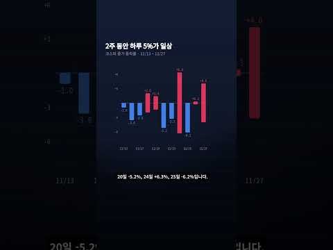

코스피
실시간 시세
4,915.68
+4.34%
2026-11-27 15:30 마감 · 정규장 종가
지난 2주 하루 4% 넘게 움직인 날이 4번 · 코스피는 4,915.68로 +4.34% 마감 · 코스닥은 708.99(+8.13%). 매크로 롱·숏은 56:44에서 50:50로 재편됐고, 국면은 '중립'입니다.
각 항목의 ? 보는 법을 누르면 왜 돈이 되는지 → 실전 읽는 3줄 → 주의할 한계가 열립니다. 처음엔 이것만 읽어도 됩니다. 수치는 자체 정량 분석 기준으로 산출하며, 세부 산식은 공개하지 않습니다.
맞힌 기록만 모으면 다음 판단을 고칠 수 없습니다. 틀린 건, 채점 대기 건까지 같은 자리에 두고 기간·표본과 함께 보여 줍니다. 이 성적표가 앞으로 유저 롱·숏 예측과 겨루는 기준선입니다.
맞힌 기록만 모으면 어떤 판단이 실제로 돈이 되는지 알 수 없습니다. 틀린 건과 채점 대기 건까지 같은 자리에 두고, 표본과 기간을 함께 봐야 내 판단을 고칠 수 있습니다.
과거 적중률은 미래 수익을 보장하지 않습니다. 채점 기준은 익일 종가·정해진 기간 수익률로 단순화해 측정합니다.
| 블록 | 기간 | 표본 | 적중 | 부가 | 평균 | 채점 기준 |
|---|---|---|---|---|---|---|
| 코스피100 선점 TOP5 | 2026-11-25 ~ 2026-11-27 | 10/15 | 8/10 | 목표 3 · 손절권 3 | +2.68% | 익일 종가 |
| 수급 역행 T+1 | 2026-11-13 ~ 2026-11-27 | 80/98 | 40/80 | 알파 43/80 | +0.05% | 1거래일 뒤 |
| 수급 역행 T+3 | 2026-11-13 ~ 2026-11-27 | 64/98 | 23/64 | 알파 39/64 | −0.82% | 3거래일 뒤 |
| 수급 역행 T+5 | 2026-11-13 ~ 2026-11-27 | 48/98 | 13/48 | 알파 27/48 | −2.81% | 5거래일 뒤 |
| 미국 거시지표 예상 | 2026-11-25 ~ 2026-11-26 | 7/7 | 범위 4/7 | 방향 2/7 | — | 발표일 |
| 롱·숏 국면 | 2026-11-25 ~ 2026-11-27 | 3/4 | 2/3 | — | — | 다음 거래일 |
| 장중 1차 트리거 | 2026-11-25 | 4 | 1/4 | 하방 이탈 75% | 최대 +0.50% | 당일 장중 |
수급 역행 표본 98건 중 T+1 채점 80건 · 채점은 정해진 기간 뒤 종가 기준입니다. 지수가 크게 빠진 구간이 섞여 있어 절대 수익률과 시장 대비 초과를 나눠 적었습니다.
| 추천일 | 종목 | 선점가 | 익일 종가 | 수익률 | 판정 |
|---|---|---|---|---|---|
| 11/26(목) | HMM011200 | 22,200 | 22,300 | +0.45% | 적중 |
| 11/26(목) | 하이브352820 | 187,500 | 188,500 | +0.53% | 적중 |
| 11/26(목) | 미래에셋증권006800 | 20,100 | 23,350 | +16.17% | 적중목표 도달 |
| 11/26(목) | 삼양식품003230 | 1,321,000 | 1,300,000 | −1.59% | 빗나감장중 손절가 터치 |
| 11/26(목) | HD한국조선해양009540 | 225,000 | 230,500 | +2.44% | 적중목표 도달 |
| 11/25(수) | HMM011200 | 22,050 | 22,150 | +0.45% | 적중 |
| 11/25(수) | NAVER035420 | 158,800 | 160,400 | +1.01% | 적중 |
| 11/25(수) | LG생활건강051900 | 259,000 | 252,000 | −2.70% | 빗나감장중 손절가 터치 |
| 11/25(수) | 미래에셋증권006800 | 18,600 | 20,300 | +9.14% | 적중목표 도달 |
| 11/25(수) | 삼양식품003230 | 1,304,000 | 1,316,000 | +0.92% | 적중장중 손절가 터치 |
| 발표일 | 지표 | 예상 범위 | 실제 | 서프라이즈 | 판정 |
|---|---|---|---|---|---|
| 11/26(목) | 신규 주택판매 (10월) | 640,000~660,000 | 701,000 | +51,000 | 빗나감 |
| 11/25(수) | GDP (QoQ) (3분기) | 3.40~3.50 | 4.30 | +0.80 | 빗나감 |
| 11/25(수) | 개인소비지출 물가 지수 (YoY) (10월) | 3.78~3.82 | 3.80 | +0.00 | 적중 |
| 11/25(수) | 개인소비지출 물가지수 (MoM) (10월) | 0.27~0.33 | 0.30 | +0.00 | 적중 |
| 11/25(수) | 근원 개인소비지출 물가지수 (YoY) (10월) | 3.10~3.30 | 3.30 | +0.10 | 적중 |
| 11/25(수) | 근원 소비지출물가지수 (MoM) (10월) | 0.26~0.33 | 0.30 | +0.00 | 적중 |
| 11/25(수) | 신규 실업수당청구건수 | 198,000~203,000 | 189,000 | -12,000 | 빗나감 |
| 국면 기준일 | 롱 : 숏 | 다음 거래일 | 코스피 | 판정 |
|---|---|---|---|---|
| 11/27(금) | 롱 50 : 숏 50중립 · 당일 | — | — | 판정 대기 |
| 11/26(목) | 롱 45 : 숏 55숏 우위(약) · 당일 | 11/27(금) | +4.34% | 빗나감 |
| 11/26(목) | 롱 56 : 숏 44롱 우위(약) · 11/24(화)~11/26(목) | 11/27(금) | +4.34% | 적중 |
| 11/25(수) | 롱 61 : 숏 39롱 우위(약) · 당일 | 11/26(목) | +0.29% | 적중 |
판정은 발표 다음 거래일 코스피 등락 부호로만 봅니다. 장중에 뒤집힌 날은 종가 기준으로 채점합니다.
틀린 기록도 지우지 않습니다. 채점 기준은 ‘익일 종가’, ‘정해진 기간 뒤 종가’, ‘발표치가 예상 범위 안이었는지’처럼 누구나 확인할 수 있는 값으로 단순화했고, 표본이 30건 미만인 칸은 방향 참고로만 쓰세요. 과거 적중이 미래 수익을 보장하지 않습니다.
지구가 도는 순서 그대로 — 아시아(아침) → 유럽(오후) → 미국(밤). 어느 대륙이 열려 있고 어디로 갔는지 한눈에 봅니다.
한국장은 전날 미국장 결과를 다음 날 아침 가격에 반영합니다. 아시아 → 유럽 → 미국 순서로 바통이 어디로 넘어가는지 보면, 내일 우리 장이 갭업·갭다운으로 시작할 확률을 미리 가늠할 수 있습니다.
지수는 대표 종목의 평균이라, 내 종목의 등락 방향이나 폭을 보장하지 않습니다.
⚡ 장중 실시간 · ⏸ 직전 확정 마감 — 각 줄의 기준 시각은 해당 시장 현지 마지막 체결 기준입니다. 각 줄의 등락은 해당 시장의 마지막 체결 기준입니다.
미국 주식형 5일 자금 -107,649mn$ · 미국 장기채 5일 자금 +8,639mn$
유동성·신용 지표는 주 단위로 늦게 확정되고 발표 시차가 제각각입니다. 방향 판단의 참고로만 쓰세요.
지수가 오르내리는 큰 물줄기는 결국 돈의 양입니다. 순유동성·신용 스트레스·선물 포지션·옵션 수급이 한 방향으로 꺾이는 지점이 위험자산 방향의 변곡점이 되는 경우가 많습니다.
유동성 지표는 주 단위로 늦게 확정되고, 발표 시차가 제각각이라 실시간 방향 전환을 잡지는 못합니다.
글로벌 강세 — 아시아 +2.82% · 미국 선물 +2.34% → 한국 생명과학도구및서비스(+12.02%) · 생물공학(+11.58%) · 증권(+9.13%)로 자금 연결 · 대표 매집 주성엔지니어링(+13.99%)
섹터·종목 칩을 누르면 해당 표·카드로 이동합니다. 연결 강도(ρ)는 두 시장이 얼마나 같이 움직였는지를 나타낸 값이며 인과가 아닙니다.
글로벌 지수가 오르는데 한국 어느 섹터로 돈이 붙었는지를 같이 봐야 '테마성 반등'과 '실제 자금 유입'을 구분할 수 있습니다.
ρ는 과거 한 달의 통계적 동행일 뿐 인과가 아니며, 개별 기업 재료가 나오는 날에는 끊깁니다.
지난 10거래일의 실제 결과와 11/29~12/04의 조건부 콜·풋, 주요 지표·정책 일정을 달력 한 장에 겹쳐 놓았습니다. 칸을 누르면 그날의 결과와 조건이 열리고, 목록 뷰에서는 표로 길게 볼 수 있습니다.
지난 2주는 '그날의 시나리오 vs 실제 결과'로 채점돼 있어 내 판단 습관의 편향을 확인할 수 있고, 다음 주는 가격 조건이 붙은 분기점으로 미리 준비할 수 있습니다.
확인된 지표 결과로 방향을 정하는 시나리오라, 장중 급변에는 늦게 반응합니다.
| 발표일 | 지표 | 예상 범위 | 실제 | 서프라이즈 | 판정 |
|---|---|---|---|---|---|
| 11/26(목) | 신규 주택판매 (10월)예상 640,000~660,000 | 640,000~660,000 | 701,000 | +51,000 | 범위 밖 |
| 11/25(수) | GDP (QoQ) (3분기)예상 3.40~3.50 | 3.40~3.50 | 4.30 | +0.80 | 범위 밖 |
| 11/25(수) | 개인소비지출 물가 지수 (YoY) (10월)예상 3.78~3.82 | 3.78~3.82 | 3.80 | +0.00 | 범위 안 |
| 11/25(수) | 개인소비지출 물가지수 (MoM) (10월)예상 0.27~0.33 | 0.27~0.33 | 0.30 | +0.00 | 범위 안 |
| 11/25(수) | 근원 개인소비지출 물가지수 (YoY) (10월)예상 3.10~3.30 | 3.10~3.30 | 3.30 | +0.10 | 범위 안 |
| 11/25(수) | 근원 소비지출물가지수 (MoM) (10월)예상 0.26~0.33 | 0.26~0.33 | 0.30 | +0.00 | 범위 안 |
| 11/25(수) | 신규 실업수당청구건수예상 198,000~203,000 | 198,000~203,000 | 189,000 | -12,000 | 범위 밖 |
지표 발표 전에 적어 둔 예상 범위와 실제 발표치를 그대로 비교합니다. 예상 범위를 벗어난 날도 지우지 않았습니다.
칸 위쪽은 그날 코스피 종가와 등락, 아래는 당시 시나리오 채점 결과입니다. 앞으로의 날짜는 조건 가격과 목표만 적었고, 조건에 닿기 전에는 행동하지 않는 것이 원칙입니다.
외국인 −5,419억 · 반도체 조정
당시 시나리오3호: 5,200~5,300 박스
외국인 −1조 3,287억
당시 시나리오4차: 5,000 지지 시 콜
외국인 −1조 4,249억 · 5,000 이탈
당시 시나리오4차: 5,000 회복 확인 후 콜
기관 +4,926억 · 기타법인 +4,636억
당시 시나리오4차: 갭업 지속 시 5,000~5,100
FOMC 10월 의사록 매파 소화
당시 시나리오4차: MA5 5,154 돌파 시 5,150
AI 밸류에이션·對中 반도체 규제 · 외인 −1조 1,233억
당시 시나리오5차(6호): 4,950 이탈 시 풋
4,800 이탈 · VIX 30.03 · TAIL-RISK
당시 시나리오6차(7호): 4,800 이탈 시 4,708
미 CB 소비자신뢰 103.3(예상 92.4) · 외인 +8,130억
당시 시나리오6차: 미 반등 안착 시 4,850
외인 −1조 8,193억 · 프로그램 매도
당시 시나리오6차: PCE 0.4%↑ → 4,600
한은 기준금리 3.25% 인상 · 기관 +7,530억
당시 시나리오7차(8호): 매파면 4,650
4,850 콜 상단 장중 돌파 · 코스닥 708.99(+8.13%)
당시 시나리오7차: 4,750 안착 → 4,850
무역적자 축소
목표 4,900 안착적자 확대
목표 4,800 재시험생산목표 동결로 유가 안정 + 위원회 확대 확정
목표 4,900감산 축소·증산 신호로 유가 급등, 확대 지연
목표 4,750PMI 50 회복 + 증안펀드 절차 구체화
목표 4,950PMI 49 미만 + 정책 기대 후퇴
목표 4,700물가 둔화·PMI 54.5 이상
목표 4,900유럽 물가 재상승
목표 4,700ISM 55 이상 + 물가 둔화
목표 4,950스태그 우려 재점화
목표 4,700서비스 확장 유지
목표 4,950서비스 위축
목표 4,650고용 견조·임금 안정
목표 5,000고용 쇼크·임금 서프라이즈
목표 4,600원칙 지표 결과가 확인된 뒤에 방향을 정한다. 확인 전에는 한쪽에 걸지 않고, 예상을 벗어난 발표가 나오면 그날 밤 콜·풋 비율을 다시 매긴다.
| 날짜·시각 | 일정 | 분류 |
|---|---|---|
| 11/28(토) 06:30 | 연준의 대차 대조표↗경제 일정 | 미국 지표유동성 |
| 11/29(일) 19:00 | OPEC 회의↗경제 일정 | 미국 지표유가·원자재 |
| 11/30(월) 23:45 | 시카고 구매관리자지수↗경제 일정 | 미국 지표성장·경기 |
| 11/30(월) | 국회 예결위 전체회의 — 820.9조 예산안 의결정책 촉매 | 예산·재정추진 |
| 12/1(화) 05:30 | CFTC S&P 500 투기적 순포지션↗경제 일정 | 미국 지표기타 |
| 12/1(화) 23:45 | 제조업 구매관리자지수 (예상 54.5)↗경제 일정 | 미국 지표성장·경기 |
| 12/2(수) 00:00 | ISM 제조업구매자지수↗경제 일정 | 미국 지표성장·경기 |
| 12/2(수) 22:15 | ADP 비농업부문 고용 변화↗경제 일정 | 미국 지표고용 |
| 12/3(목) 23:45 | 서비스 구매관리자지수 (예상 54.7)↗경제 일정 | 미국 지표성장·경기 |
| 12/4(금) 00:00 | ISM 비제조업구매자지수↗경제 일정 | 미국 지표성장·경기 |
| 12/4(금) 22:30 | 비농업고용지수↗경제 일정 | 미국 지표고용 |
| 12/10(목) 04:00 | FOMC 금리결정·기자회견↗경제 일정 | 미국 지표금리·FOMC |
| 12/11(금) | 미 임시예산(CR) 만료 — 신규 예산 없으면 셧다운정책 촉매 | 셧다운시한 |
| 12/11(금) | CR 만료와 함께 국방예산·NDAA 협상정책 촉매 | 국방시한 |
공개된 시장 일정만 모았습니다(개인 일정·계좌 없음). 종목별 영향도는 각 종목 카드의 ‘다가오는 일정’에서 볼 수 있습니다.
가격·수급·재료를 함께 본 자체 정량 분석으로 고른 상위 5종목에 1차·2차 진입과 비중을 붙였습니다. 각 카드의 1개월 변곡점 타임라인을 펼치면 그 가격에 온 이유와 예정 이벤트 영향도가 나옵니다.
선점 후보 상위 종목의 진입가·목표·손절을 손익비까지 제시했고, 타임라인은 그 종목이 왜 지금 가격에 왔는지(변곡점 당일 등락과 재료)와 앞으로 무엇이 예정돼 있는지를 한 화면에 붙여 줍니다.
영향도는 이 종목이 평소 어느 축에 민감한지로 매긴 참고 등급이며, 개별 악재·호재 자체를 예측하지 않습니다.
비중은 '이 종목에 배정하려던 매수금' 대비 비율입니다(계좌 전체 비중 아님). 1차 40% : 2차 60%
시장 동반 — 코스피 +1.76%시장
시장 동반 — 코스피 -3.52%시장
개별 재료 없음 — 코스피 +0.62% 속 종목 수급수급
개별 재료 없음 — 코스피 -0.81% 속 종목 수급수급
연방공개시장위원회 회의록↗경제 일정
같은 날 미국 빅이벤트 — 서비스 구매관리자지수미국 지표
과거 영향도는 그날 등락 폭으로, 예정 일정 영향도는 이 종목이 평소 어느 축에 민감한지로 매긴 참고 등급입니다. 민감 축의 ‘시장’은 같은 기간 코스피와 얼마나 같이 움직였는지를 뜻하며, 종목 값이 시장보다 높을수록 그 축에 더 민감합니다. 뉴스는 발생 시각(KST)과 원문 링크를 그대로 적었습니다. 관측 구간 2026-10-19~2026-11-27.
비중은 '이 종목에 배정하려던 매수금' 대비 비율입니다(계좌 전체 비중 아님). 신규 진입 보류 — 가격 추적만(비중 상한 41%)
시장 동반 — 코스피 -3.73%시장
시장 동반 — 코스피 -3.48%시장
개별 재료 없음 — 코스피 +0.62% 속 종목 수급수급
연방공개시장위원회 회의록↗경제 일정
시장 동반 — 코스피 -5.21%시장
시장 동반 — 코스피 +4.34%시장
과거 영향도는 그날 등락 폭으로, 예정 일정 영향도는 이 종목이 평소 어느 축에 민감한지로 매긴 참고 등급입니다. 민감 축의 ‘시장’은 같은 기간 코스피와 얼마나 같이 움직였는지를 뜻하며, 종목 값이 시장보다 높을수록 그 축에 더 민감합니다. 뉴스는 발생 시각(KST)과 원문 링크를 그대로 적었습니다. 관측 구간 2026-10-19~2026-11-27.
비중은 '이 종목에 배정하려던 매수금' 대비 비율입니다(계좌 전체 비중 아님). 1차 50% : 2차 50%
시장 동반 — 코스피 -3.73%시장
시장 동반 — 코스피 -3.48%시장
시장 동반 — 코스피 -5.28%시장
같은 날 미국 빅이벤트 — 연방공개시장위원회 회의록미국 지표
연방공개시장위원회 회의록↗경제 일정
공시 — [기재정정]단일판매ㆍ공급계약체결 (자회사의 주요경영사항) / [기재정정]단일판매ㆍ공급계약체결 (자회사의 주요경영사항)공시
과거 영향도는 그날 등락 폭으로, 예정 일정 영향도는 이 종목이 평소 어느 축에 민감한지로 매긴 참고 등급입니다. 민감 축의 ‘시장’은 같은 기간 코스피와 얼마나 같이 움직였는지를 뜻하며, 종목 값이 시장보다 높을수록 그 축에 더 민감합니다. 뉴스는 발생 시각(KST)과 원문 링크를 그대로 적었습니다. 관측 구간 2026-10-19~2026-11-27.
비중은 '이 종목에 배정하려던 매수금' 대비 비율입니다(계좌 전체 비중 아님). 1차 40% : 2차 60%
개별 재료 없음 — 코스피 +0.62% 속 종목 수급수급
개별 재료 없음 — 코스피 -0.81% 속 종목 수급수급
참고 지표 — 신규 실업수당청구건수미국 지표
같은 날 미국 빅이벤트 — 소매판매 (MoM)미국 지표
연방공개시장위원회 회의록↗경제 일정
같은 날 미국 빅이벤트 — 서비스 구매관리자지수미국 지표
과거 영향도는 그날 등락 폭으로, 예정 일정 영향도는 이 종목이 평소 어느 축에 민감한지로 매긴 참고 등급입니다. 민감 축의 ‘시장’은 같은 기간 코스피와 얼마나 같이 움직였는지를 뜻하며, 종목 값이 시장보다 높을수록 그 축에 더 민감합니다. 뉴스는 발생 시각(KST)과 원문 링크를 그대로 적었습니다. 관측 구간 2026-10-19~2026-11-27.
비중은 '이 종목에 배정하려던 매수금' 대비 비율입니다(계좌 전체 비중 아님). 신규 진입 보류 — 가격 추적만(비중 상한 41%)
시장 동반 — 코스피 -3.73%시장
시장 동반 — 코스피 +6.63%시장
시장 동반 — 코스피 -3.48%시장
개별 재료 없음 — 코스피 -0.81% 속 종목 수급수급
연방공개시장위원회 회의록↗경제 일정
시장 동반 — 코스피 -5.21%시장
과거 영향도는 그날 등락 폭으로, 예정 일정 영향도는 이 종목이 평소 어느 축에 민감한지로 매긴 참고 등급입니다. 민감 축의 ‘시장’은 같은 기간 코스피와 얼마나 같이 움직였는지를 뜻하며, 종목 값이 시장보다 높을수록 그 축에 더 민감합니다. 뉴스는 발생 시각(KST)과 원문 링크를 그대로 적었습니다. 관측 구간 2026-10-19~2026-11-27.
타점은 최근 흐름의 지지·저항과 수급을 겹쳐 산출하고, 익일 개장 초반을 기준 시간창으로 제시합니다. 비중은 ‘해당 종목에 배정하려던 매수금’ 대비 비율이며, 계좌 전체 비중이 아닙니다.
오늘 장중 주도 업종과 전일 확정 자금 유입을 나란히 놓고, T+1~T+3 경향을 적중률·표본과 함께 보여줍니다.
돈은 종목 등락보다 먼저 움직입니다. 유입 1일차에 올라탄 섹터가 2~3일 순환매를 타는 경우가 많아, 내 종목이 어느 파도에 올라타 있는지 확인하는 데 씁니다.
섹터 단위 수급은 거래대금과 상대강도로 대신 잰 추정치라, 개별 종목 자금과 다를 수 있습니다.
막대는 당일 업종 등락률, 옆 숫자는 평소 대비 거래대금과 상승 종목 비율입니다.
확률이 없는 칸은 통계적 근거가 약한 참고값입니다. 표본이 쌓이면 확률로 대체됩니다.
오늘 시장으로 들어온 돈과 나간 돈을 어제·20일 평균과 비교합니다. 지수가 빠졌는데 종목에 돈이 들어오는 역행과, 팔 물량이 줄어드는 품절(물량 잠김) 후보를 함께 봅니다.
'지수는 빠졌는데 이 종목엔 돈이 들어왔다'가 가장 강한 신호입니다. 외인·기관 순매매를 어제·평균과 비교하고, 유통물량 대비 매수 비중으로 '팔 물량이 줄어드는 종목'을 1차로 걸러냅니다.
외인 금액은 잠정치일 수 있고 기관·지분율은 하루 늦게 반영됩니다. 유통주식수는 주요주주·자사주를 뺀 추정치입니다.
최근 5거래일 외인+기관 합계 — −592억 · +1조 6,864억 · −1조 8,154억 · +6,618억 · +1조 3,903억
외인·기관 동반 매수(합 +13,903억) · 상승 종목 88%
최근 5거래일 외인+기관 합계 — +1,583억 · +3,524억 · +446억 · +1,301억 · +8,878억
외인·기관 동반 매수(합 +8,878억) · 상승 종목 92%
공매도 비중이 시장 평균보다 높은데 가격이 오르면 숏커버 여지, 가격도 약하면 공매도 압력으로 읽습니다. 잔량은 공개분 기준이고 집계일이 하루 늦을 수 있습니다.
전일 확정치와 관측일 기준 값입니다. 금액 단위는 각 줄에 표기했습니다.
| # | 업종 | 등락 | 거래대금 | 평균 대비 | 신호 |
|---|---|---|---|---|---|
| 1 | 생명과학도구및서비스대표 지씨지놈 | +12.02% | 1,388억 | 2.43배 | 자금 집중 |
| 2 | 생물공학대표 에이비엘바이오 | +11.58% | 4,814억 | 2.23배 | 자금 집중 |
| 3 | 증권대표 미래에셋증권 | +9.13% | 2,559억 | 1.91배 | 자금 집중 |
| 4 | 통신장비대표 케이앤에스아이앤씨 | +9.69% | 2,755억 | 1.57배 | 자금 집중 |
| 5 | 기계대표 코스모로보틱스 | +8.59% | 11,400억 | 1.80배 | 자금 집중 |
| # | 종목 | 등락 | 순매수 | 평균 대비 | 신호 |
|---|---|---|---|---|---|
| 1 | 주성엔지니어링036930 | +13.99% | 212억 | — | 순매도→매수 전환잠정·추정 |
| 2 | 한미반도체042700 | +8.60% | 297억 | 12.32배 | 매수 급증잠정·추정 |
| 3 | 삼성전기009150 | +5.10% | 1,063억 | — | 순매도→매수 전환잠정·추정 |
| 4 | LG씨엔에스064400 | +8.94% | 88억 | 28.70배 | 매수 급증잠정·추정 |
| 5 | LS ELECTRIC010120 | +6.88% | 187억 | 12.31배 | 매수 급증잠정·추정 |
| 종목 | 등락 | 외인 지분율 | 유통비율 | 회전율 | 유통 대비 | 품절 점수 |
|---|---|---|---|---|---|---|
| 금호전기001210 | +5.56% | 14.86%+0.34%p | 100.0% | 4.8% | 1.01% | 60.5물량 잠김 후보 |
| 퀀텀레일070300 | +29.83% | 7.93%+0.42%p | 100.0% | 12.0% | 0.27% | 55.4물량 잠김 후보 |
| 쓰리빌리언394800 | +6.17% | 7.87%+0.60%p | 100.0% | 13.8% | -0.05% | 52.9 |
| 디아이003160 | +10.68% | 18.73%+0.25%p | 100.0% | 3.6% | 0.42% | 42.9 |
| 삼성전기009150 | +5.10% | 34.73%+0.40%p | 100.0% | 2.2% | 0.16% | 39.2 |
| 주성엔지니어링036930 | +13.99% | 8.14%+0.22%p | 100.0% | 4.1% | 0.26% | 35.1 |
유통비율 = 유통주식수 ÷ 상장주식수(주요주주·자사주 제외). ‘주주지분 반영’은 실제 지분이 확인된 종목이고, 표시가 없으면 상장주식수 기준 보수 추정입니다. 점수 40 이상은 외인 지분율 상승과 유통물량 대비 매수가 겹친 구간이며, 후보를 좁히는 용도입니다.
외인 금액은 장 마감 직후 잠정치일 수 있고, 기관 수급과 외인 지분율은 하루 늦게 확정됩니다. 유통주식수는 주요주주·자사주를 뺀 추정치이며, 지분이 공개되지 않은 종목은 상장주식수 기준으로 보수적으로 계산했습니다.
종목 삼성전자 005930 기준으로 오늘 돈이 가장 많이 지나간 ETF와 가장 많이 담고 있는 ETF를 나란히 놓았습니다. 레버리지·인버스는 비교에서 뺐습니다.
같은 섹터를 사더라도 '돈이 많이 지나간 ETF'와 '그 섹터를 가장 진하게 담은 ETF'는 다릅니다. 전자는 체결이 편하고, 후자는 같은 상승에서 더 크게 움직입니다(하락도).
구성 비중은 공개된 상위 구성종목 기준이라 나머지는 보이지 않고, 과거 수익률이 미래를 보장하지 않습니다.
오늘 거래대금 1조 4,378억으로 후보 중 자금이 가장 많이 지나간 상품 — 삼성전자 32.74% 보유
오늘 거래대금 5,986억으로 후보 중 자금이 가장 많이 지나간 상품 — 삼성전자 32.71% 보유
오늘 거래대금 2,326억으로 후보 중 자금이 가장 많이 지나간 상품 — 삼성전자 27.36% 보유
삼성전자 비중 32.75%로 후보 중 최고 — 거래대금 316억
삼성전자 비중 32.74%로 후보 중 최고 — 거래대금 1조 4,378억
삼성전자 비중 32.72%로 후보 중 최고 — 거래대금 512억
구성 비중은 공개된 상위 구성종목 기준이고, 비중 변동(p)은 직전 거래일과 비교한 값입니다. 레버리지·인버스·파생 ETF 8종은 제외했습니다. 투자 판단의 참고 자료이며 권유가 아닙니다.
같은 데이터에서 나온 쇼츠·롱폼·블로그로 바로 이동합니다. 카드를 누르면 새 창에서 열립니다.
 06 시황·속보
롱폼
06 시황·속보
롱폼
 04 종목분석
쇼츠
04 종목분석
쇼츠

06 시황·속보 쇼츠업로드된 영상은 현재 검토용 비공개 상태입니다. 공개로 전환하면 카드가 그대로 재생 링크가 됩니다.
상세 원고는 공개 준비 중입니다. 공개되면 이 자리에서 바로 열립니다.